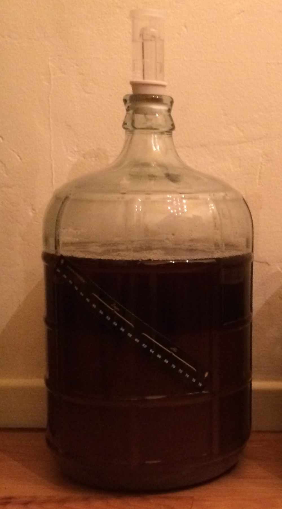
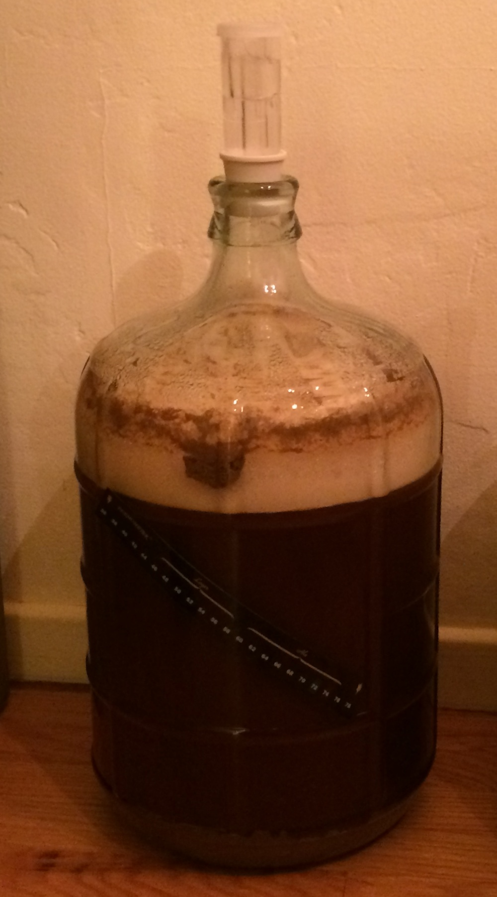

Oatmeal stout, my first attempt at something that's not a Belgian IPA.
~3 gallons of water to the boil
By 1115 it was boiling, left it on until about 1130
So 1 hour to sterilize 3 gallons.
But it took until 2200 or so before it was close to room temperature.

Used the coffee grinder at very coarse setting to grind the barley and crystal malt; added those plus oats to the must bag. Into the pot with about 2 gallons of water; raised temp to around 170°F and held it there for 30 minutes. Removed the must bag; increased heat to boiling; added the malt extract and 1.5 oz hops and boiled for about 50 minutes. Towards the end of the boil, the must bag had cooled enough that I could squeeze more water out of it; collected this in a bowl and dumped back into the wort.
Cut heat; added last 0.5 oz of hops and let it steep for 15 minutes; then added cool water, which brought temp down but it was still above 80°F. Let it sit for the rest of the afternoon, outside part of the time.
Around 1800 it was nearly room temp, but still not down to the range of the Fermometer. Oh well! Added 2 tsp yeast energizer and the yeast, gave it a good stir, and siphoned into 2 x 2.5 gallon carboys.
After I remembered to take a gravity reading, which stood at 7.5% potential alcohol.

In the morning, nothing. But in the evening, both carboys are happily bubbling away.
Re-racked the small carboys into the single 5-gallon carboy in the evening. Both small carboys were mostly quiescent by this point. Added 2 tsp yeast energizer to the large carboy.
Bottling!
1/2 c priming sugar